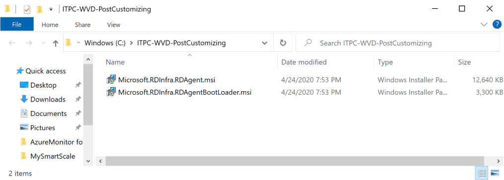

The long await update from WVD is public. It comes with a full ARM integration and is natively useable in the Azure Portal. The change from Fall to Spring (the name of both releases) cames without a build-in migration solution right now. You can rebuild your host pools and app groups and manually join your existing session hosts into the new once.
With WVDAdmin I added two features to do that directly from the GUI:
- Migrate a host pool to the Spring update: Creates a new host pool with the same properties as an existing host pool in the Fall update
- Move session hosts to another host pool*: Works in each direction and from host pool to host poll in the same version (you can use this additionally to remove an assigned user from a session host).
Note: If you are using WVDAdmin V1.5.5 or lower (v1.5.6 and higher downloads the files from Microsoft if internet access is not blogged): You can only move session hosts from host pool to host pool if you built the session host with WVDAdmin. If not, and you want to use this function with your other deployed session create a folder “ITPC-WVD-PostCustomizing” in C:\ and copy the RDAgent files into this folder and rename the files:
- Microsoft.RDInfra.RDAgent.msi (rename the file)
- Microsoft.RDInfra.RDAgentBootLoader.msi (rename the file)
Make sure that you rename the files to fit the list above (without version numbers).

But first: If you are new to WVD Spring update and have never used it before in your subscription, you have to register the service provider Microsoft.DesktopVirtualization (one-time process). You must be the owner of this subscription to do this. Go to your subscription -> Resource providers -> search for “Microsoft.DesktopVirtualization” and click register:

The migration process
The easiest way to migrate a Host Pool from Fall to Spring is by using WVDAdmin. If you have not WVDAdmin before, check out this post .
- Right-click your existing host pool and click: Migrate Host Pool settings to WVD Spring Update
-
- Select a target subscription and resource group (note: be sure not to mix different host pools in one resource group with app groups having the same name. If you do this, you will see that the migration process cannot migrate this app groups)
- Select a region: The region saved the meta-data and is independent of the region of your session hosts. There are only limited regions today
- Enter a name for your new Spring host pool
- Logoff all users
- Right-click a session host and click “Change host pool” (read my note above, if this host was not created with WVDAdmin)
-
- Select the target host pool. Spring update host pools are tagged with a ²
- Check “Keep user assignment” if you migrate aa assigned session hosts and want to keep the assignment. If you uncheck this, the user assignment will be repealed
- Repeat the step “Right-click your existing host pool and click: Migrate Host Pool settings to WVD Spring Update” to re-create the icons for your applications. This can only be done if one session host is online
- Give the right user groups permission to the app groups: Click the app group(s) and click the button “Users and groups assignments” and start typing the name of the group(s). Note: I don’t migrate the user permission from the fall update believing that you won’t to add groups instead of single users
- Create a Workspace
-
- Create a Workspace right-clicking the workspace note. Create a workspace in the same region as your new host pool
- Right-click the workspace and add/link the app groups you have created
- Move more session hosts to the new host pool
-
- Right-click the session host note and select “Change host pool”
After that, you should see your resources in the native RD client and in the HTML web site which has a new URL: https://rdweb.wvd.microsoft.com/arm/webclient
Debugging/notes:
-
If you are using WVDAdmin V1.5.5 or lower (v1.5.6 and higher downloads the files from Microsoft if internet access is not blogged): Moving session host works with host created with WVDAdmin or if you create a folder “ITPC-WVD-PostCustomizing”. Copy the files into it:
-
-
Microsoft.RDInfra.RDAgent.msi (rename the file)
-
Microsoft.RDInfra.RDAgentBootLoader.msi (rename the file)
-
-
You cannot have app groups with from different host pools with the same name in one resource group
-
Register Microsoft.DesktopVirtualization service provider
-
The service principal of WVDAdmin needs owner permission to the resource groups containing the app groups to add/remove users
-
The HTML5 client has a new URL: https://rdweb.wvd.microsoft.com/arm/webclient
-
If you “lost” a session host you can add them manually to a host pool by doing:
-
- Login to the VM
- Uninstall the RD agent and bootloader
- Install the bootloader
- install the agent and copy the registration key for the target host pool into the installation screen
I record a short video showing the migration process:
More details and download: WVDAdmin
And get additional information from Freek Berson
Official announcement: https://www.microsoft.com/en-us/microsoft-365/blog/2020/04/30/enable-remote-work-faster-new-windows-virtual-desktop-capabilities/